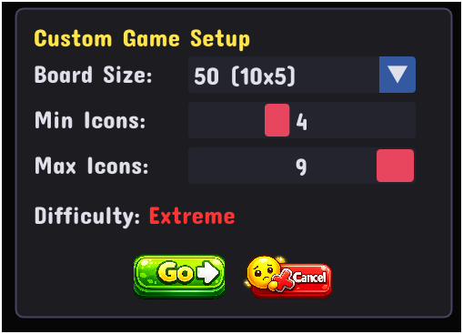
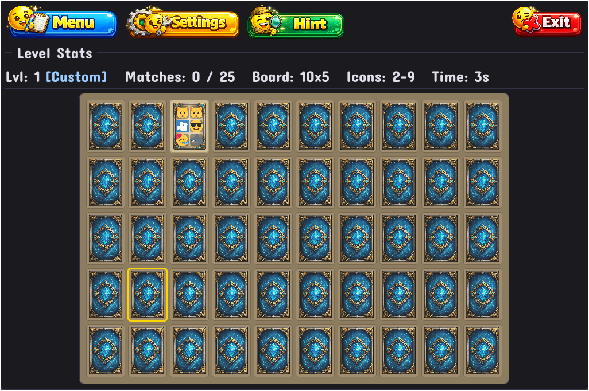

Last Updated: 2026-05-17
Difficulty Levels
MemMoji has four difficulty settings that affect how fast the board grows and how complex the emoji patterns become. Choose at the title screen — you can start a new game to change difficulty at any time.
Easy
- Board grows slowly (same schedule as Normal/Hard for size, but icons stay simple)
- Cards always show just 1 emoji (2 emojis on the very largest boards — 48 cards)
- Up to 3 pairs can share the same emoji on a board, which is more forgiving
- Best for: first-time players, younger players, or anyone who wants a relaxed experience
Normal
- Standard difficulty — the intended experience
- Cards show 1 emoji for the first 50 levels
- From level 51 onward, cards gradually get more emojis (2, then 3, up to 6)
- Multiple emojis on a card mean you must match the exact same combination, in the same arrangement
- Best for: most players
Hard
- Cards immediately start gaining more emojis as you level up
- Level 1–10: 1 emoji, Level 11–20: 2 emojis, and so on up to 9 emojis per card
- At higher levels, two cards might even show the same emojis but in a different order — and they're NOT a match! You must match the exact same arrangement.
- Best for: experienced memory game players looking for a real challenge
Custom

- You choose the board size, minimum icons per card, and maximum icons per card
- Great for practicing specific configurations or creating your own challenge
- Click the Go button to start or the Cancel button to return to the title screen
- Board size can be any of the standard sizes (16 to 50 cards)
- Icons per card range from 1 to 9
- Best for: players who want full control over their experience

Board Size by Level
| Levels | Number of Cards | Pairs to Find |
|---|---|---|
| 1–5 | 16 | 8 |
| 6–10 | 20 | 10 |
| 11–15 | 24 | 12 |
| 16–20 | 28 | 14 |
| 21–25 | 32 | 16 |
| 26–30 | 40 | 20 |
| 31+ | 50 | 25 |
Your progress is tracked separately for each difficulty. Reaching level 10 on Normal
doesn't affect your Easy or Hard progress.